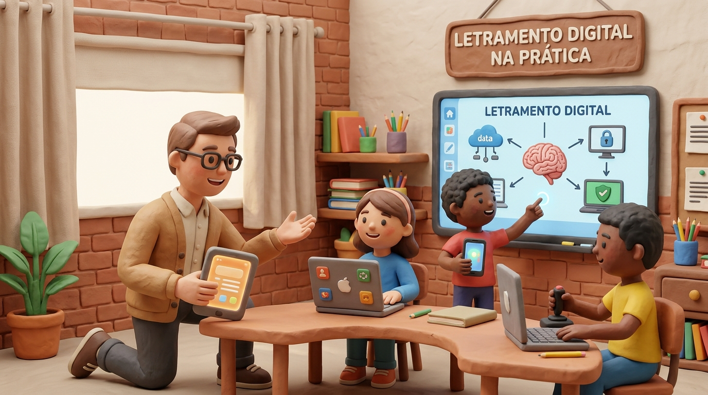

Além das Telas: Os Desafios do ECA Digital e da BNCC da Computação na Prática Docente

Neste texto
- A Era Digital: Integrar a Computação com Segurança e Sentido Humanístico
- Desmistificando o Processo Científico: O Erro do Senso Comum na Sala de Aula
- Descomplicando o Alinhamento entre BNCC e BNCC da Computação
- Desmistificando as TDICs: A Tecnologia como Meio, Não como Fim
- Um Caminho para Suavizar a Sua Rotina Docente
- Referências
Planejar aulas alinhadas às exigências da Base Nacional Comum Curricular (BNCC), integrar as Tecnologias Digitais de Informação e Comunicação (TDICs) e ainda adaptar conteúdos para a diversidade da sala de aula é uma rotina exaustiva para qualquer educador. Com a chegada da BNCC da Computação e a vigência do ECA Digital (Lei nº 15.211/2025), a pressão sobre o trabalho docente aumentou exponencialmente. Como garantir uma aprendizagem ativa e segura em Ciências da Natureza sem transformar o professor em um mero gestor de riscos e burocracias virtuais? A resposta exige ressignificar a nossa intencionalidade pedagógica.
A Era Digital: Integrar a Computação com Segurança e Sentido Humanístico
A obrigatoriedade de trabalhar o pensamento computacional, o mundo digital e a cultura digital nas redes de ensino trouxe um dilema imediato para os professores da Educação Básica. De um lado, há a necessidade premente de alfabetizar digitalmente e promover a investigação científica por meio de dados e simulações; do outro, o ECA Digital estabeleceu regras rigorosas de proteção integral à infância e à adolescência no ambiente online, responsabilizando a comunidade escolar pela proteção de dados e pela moderação do uso de telas (BRASIL, 2025). Na prática, muitos docentes viram sua carga de trabalho se multiplicar, tentando equilibrar o planejamento pedagógico com diretrizes de conformidade jurídica digital.
Separar a intenção pedagógica da simples reprodução utilitária de tecnologia é o primeiro passo para não sobrecarregar a rotina docente. Segundo dados do Comitê Gestor da Internet no Brasil (CGI.br, 2023), embora 88% das escolas brasileiras possuam acesso à internet, apenas uma fração mínima dos professores declara ter recebido formação continuada adequada para mediar o uso crítico e seguro das TDICs em suas disciplinas específicas. Na área de Ciências da Natureza, esse hiato se traduz em práticas pontuais ou no uso de telas desprovido de contextualização social, afastando o aprendizado das realidades dos alunos e de suas famílias.
Para superar essa barreira, a saída não é banir a tecnologia e nem adotá-la de forma cega, mas sim abraçar a transdisciplinaridade proposta pela abordagem STHEAM — inserindo o "H" de Humanidades no centro da Ciência, Tecnologia, Engenharia, Artes e Matemática. Através da Jornada STHEAM, o ensino de pensamento computacional em bio, química e física ganha contornos de ética, empatia, cidadania digital e Desenho Universal para a Aprendizagem (DUA), garantindo que estudantes atípicos e neurodivergentes aprendam de forma verdadeiramente inclusiva, autoral e crítica.
Desmistificando o Processo Científico: O Erro do Senso Comum na Sala de Aula
Um dos equívocos mais persistentes no cotidiano escolar é a visão positivista e linear do método científico. O senso comum costuma retratar a Ciência como um conjunto de passos rígidos — observação, hipótese, experimento e conclusão — que invariavelmente levam a uma "verdade absoluta". Essa concepção engessada afasta os estudantes da real natureza da atividade científica, que é inerentemente dinâmica, colaborativa, sujeita a falhas e profundamente influenciada por contextos sociais e éticos (CHALMERS, 1993).
Quando levamos o pensamento computacional para as aulas de Ciências da Natureza, esse mito precisa ser quebrado. O erro, a depuração (debugging) e a reformulação de hipóteses não são fracassos do processo, mas sim o próprio motor da construção do conhecimento. Ao compreenderem que cientistas também testam, erram e recalcitram abordagens, os alunos desenvolvem resiliência cognitiva e pensamento crítico — competências centrais para formar cidadãos capazes de avaliar evidências em tempos de desinformação digital.
Descomplicando o Alinhamento entre BNCC e BNCC da Computação
Articular as diretrizes gerais da BNCC com as especificidades da BNCC da Computação (Homologada pelo Parecer CNE/CP nº 2/2022) pode parecer uma tarefa hercúlea, mas a chave está na convergência de habilidades. Não se trata de criar uma nova disciplina ou sobrecarregar a grade horária, mas de integrar eixos estruturantes — Pensamento Computacional, Mundo Digital e Cultura Digital — aos objetos de conhecimento de Ciências da Natureza que você já leciona (BRASIL, 2022).
Por exemplo, ao investigar a biodiversidade local ou o ciclo da água, os estudantes podem utilizar a decomposição para dividir um problema ambiental complexo em partes menores, criar algoritmos simples para classificar espécies ou analisar padrões em dados meteorológicos. Essa abordagem não exige laboratórios sofisticados de robótica; ela fundamenta-se no desenvolvimento de esquemas mentais de resolução de problemas, unindo a investigação científica ao raciocínio lógico-computacional de maneira fluida e contextualizada.
Desmistificando as TDICs: A Tecnologia como Meio, Não como Fim
Existe um mito recorrente de que incorporar as Tecnologias Digitais de Informação e Comunicação (TDICs) exige telas individuais para todos os alunos ou o domínio de softwares complexos de programação. Essa visão gera frustração nos professores e perpetua a desigualdade nas escolas com recursos limitados. A renovação do processo de ensino-aprendizagem ocorre na intencionalidade pedagógica, e não na sofisticação do dispositivo utilizado.
As TDICs, sob a ótica do Desenho Universal para a Aprendizagem (DUA), devem servir como amplificadores de acessibilidade e autoria. O pensamento computacional pode ser trabalhado perfeitamente por meio de atividades "desconectadas" (unplugged), jogos analógicos de lógica e modelagens físicas. Quando o digital é utilizado, ele deve atuar como uma ferramenta de mediação cultural e expressão — permitindo que estudantes atípicos, com diferentes ritmos e estilos de aprendizagem, encontrem múltiplos caminhos para explorar e demonstrar seu conhecimento.
Um Caminho para Suavizar a Sua Rotina Docente
Sabemos que a sensação de estar sempre correndo contra o tempo para dar conta do currículo, das exigências burocráticas e das inovações tecnológicas é uma das maiores fontes de esgotamento na docência atual. No entanto, você não precisa percorrer essa jornada sozinho(a) e nem reinventar a roda a cada planejamento de aula. A verdadeira inovação na Educação Básica acontece quando simplificamos processos, integramos saberes e ressignificamos nossa prática com apoio e intencionalidade.
A abordagem STHEAM oferece justamente o suporte metodológico necessário para transformar essas exigências em projetos vivos e prazerosos de ensinar e aprender. Quer dar o próximo passo e ver como levar essa transdisciplinaridade para a sua realidade escolar de forma descomplicada?
👉 Leia a seguir: Muito Além da Teoria: Como a Jornada STHEAM Conecta a Escola à Realidade e descubra estratégias práticas para tirar os projetos autorais do papel com os recursos que você já tem disponíveis!
Referências
BRASIL. Lei nº 15.211, de 17 de setembro de 2025. Dispõe sobre a proteção de crianças e adolescentes em ambientes digitais (Estatuto Digital da Criança e do Adolescente). Brasília, DF: Presidência da República, 2025. Disponível em: https://www.planalto.gov.br/ccivil_03/_ato2023-2026/2025/lei/l15211.htm. Acesso em: 28 out. 2026.
BRASIL. Ministério da Educação. Conselho Nacional de Educação. Parecer CNE/CP nº 2/2022. Normas sobre Computação na Educação Básica – Complemento à BNCC. Brasília, DF: MEC/CNE, 2022. Disponível em: http://basenacionalcomum.mec.gov.br/. Acesso em: 28 out. 2026.
CHALMERS, Alan F. O que é ciência afinal? São Paulo: Editora Brasiliense, 1993.
COMITÊ GESTOR DA INTERNET NO BRASIL (CGI.br). Pesquisa sobre o uso das tecnologias de informação e comunicação nas escolas brasileiras: TIC Educação 2023. São Paulo: CGI.br, 2023. Disponível em: https://cetic.br/pt/pesquisas/tic-educacao/. Acesso em: 28 out. 2026.
Comentários
Verificando configuração dos comentários…